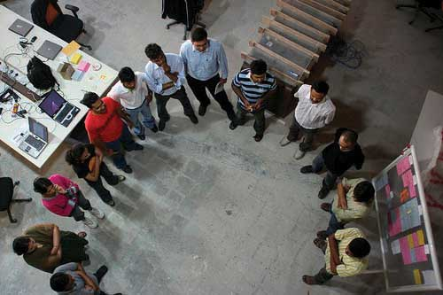

When a team is well organized, it tends to perform well. Well-designed teams are able to capitalize on positive events while maintaining composure when facing a negative event. There are several strategies that can boost team effectiveness through effective organization.
A key to successful team design is to have clear norms, roles, and expectations among team members. Problems such as social loafing or groupthink can be avoided by paying careful attention to team member differences and providing clear definitions for roles, expectancy, measurement, and rewards.
NormsShared expectations about how things operate within a group or team. are shared expectations about how things operate within a group or team. Just as new employees learn to understand and share the assumptions, norms, and values that are part of an organization’s culture, they also must learn the norms of their immediate team. This understanding helps teams be more cohesive and perform better. Norms are a powerful way of ensuring coordination within a team. For example, is it acceptable to be late to meetings? How prepared are you supposed to be at the meetings? Is it acceptable to criticize someone else’s work? These norms are shaped early during the life of a team and affect whether the team is productive, cohesive, and successful.
Explore some ideas about team norms by doing the Square Wheels exercise.
Sometimes it can be challenging to start a conversation around team ground rules and performance. The following exercise can be used to get a team talking about what works and what doesn’t in teams they’ve worked in and how your team can be designed most effectively.
Scientific research as well as experience working with thousands of teams show that teams that are able to articulate and agree on established ground rules, goals, and roles and develop a team contractA contract that includes agreements on established ground rules, goals, and roles. around these standards are better equipped to face challenges that may arise within the team.Katzenback, J. R., & Smith, D. K. (1993). The wisdom of teams. Boston: Harvard Business School Press; Porter, T. W., & Lilly, B. S. (1996). The effects of conflict, trust, and task commitment on project team performance. International Journal of Conflict Management, 7, 361–376. Having a team contract does not necessarily mean that the team will be successful, but it can serve as a road map when the team veers off course. Questions that can help to create a meaningful team contract include:
Anyone who has been involved in a team knows it involves team meetings. While few individuals relish meetings, they serve an important function in terms of information sharing and decision making. They also serve an important social function and can help to build team cohesion and a task function in terms of coordination. Unfortunately, we’ve all attended lengthy meetings that were a waste of time and where little happened that couldn’t have been accomplished by reading an e-mail in five minutes. To run effective meetings, it helps to think of meetings in terms of three sequential steps.Haynes, M. E. (1997). Effective meeting skills. Menlo Park, C Crisp.
Much of the effectiveness of a meeting is determined before the team gathers. There are three key things you can do to ensure the team members get the most out of their meeting.
First, ask yourself: Is a meeting needed? Leaders should do a number of things before the meeting to help make it effective. The first thing is to be sure a meeting is even needed. If the meeting is primarily informational, ask yourself whether it is imperative that the group fully understands the information and whether future decisions will be built on this information. If so, a meeting may be needed. If not, perhaps simply communicating with everyone in a written format will save valuable time. Similarly, decision-making meetings make the most sense when the problem is complex and important, there are questions of fairness to be resolved, and commitment is needed moving forward.
Second, create and distribute an agenda. An agenda is important in helping to inform those invited about the purpose of the meeting. It also helps organize the flow of the meeting and keep the team on track.
Third, send a reminder before the meeting. Reminding everyone of the purpose, time, and location of the meeting helps everyone prepare themselves. Anyone who has attended a team meeting only to find there is no reason to meet because members haven’t completed their agreed-upon tasks knows that, as a result, team performance or morale can be negatively affected. Follow up to make sure everyone is prepared. As a team member, inform others immediately if you will not be ready with your tasks so they can determine whether the meeting should be postponed.
During the meeting, there are several things you can do to make sure the team starts and keeps on track.
Start the meeting on time. Waiting for members who are running late only punishes those who are on time and reinforces the idea that it’s OK to be late. Starting the meeting promptly sends an important signal that you are respectful of everyone’s time.
Follow the meeting agenda. Veering off agenda communicates to members that it is not important. It also makes it difficult for others to keep track of where you are in the meeting and can facilitate important points not being addressed.
Manage group dynamics for full participation. As you’ve seen in this chapter, there are a number of group dynamics that can limit a team’s functioning. Be on the lookout for full participation and engagement from all team members as well as any potential problems such as social loafing, group conflict, or groupthink.
Summarize the meeting with action items. Be sure to clarify team member roles moving forward. If individual’s tasks are not clear, chances are role confusion will arise later. There should be clear notes from the meeting regarding who is responsible for each action item and the timeframes associated with next steps.
End the meeting on time. This is vitally important as it shows that you respect everyone’s time and are organized. If another meeting is needed to follow up, schedule it later, but don’t let the meeting run over.
Follow up on action items. After the meeting you probably have several action items. In addition, it is likely that you’ll need to follow up on the action items of others.
Figure 13.14
Conducting meetings standing up saves time yet keeps information flowing across the team. See Bluedorn, A. C., Turban, D. B., & Love, M. S. (1999). The effects of stand-up and sit-down meeting formats on meeting outcomes. Journal of Applied Psychology, 84, 277–285. This technique is used by Johnson & Johnson, Ritz-Carlton, ThoughtWorks, Agile Software, and Corning.
Photo used by permission by Jason Yip.
Much like group development, team socialization takes place over the life of the team. The stages move from evaluation to commitment to role transition. Team norms are important for the team process and help to establish who is doing what for the team and how the team will function. Creating a team contract helps with this process. Keys to address in a team contract are team values and goals, team roles and leadership, team decision making, team communication expectations, and how team performance is characterized. Team meetings can help a team coordinate and share information. Effective meetings include preparation, management during the meeting, and follow up on action items generated in the meeting.